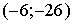

ЗАНЯТИЕ 5.12. КРИВИЗНА
Контрольные вопросы
- Что называется кривизной кривой?
- Как определить кривизну кривой, заданной явно?
Задачи
- Найти кривизну данной линии.
1) гиперболы в точке ;
2) в точке  ;
;
3) эллипса в вершинах;
4)  в начале координат,
в начале координат,
5) в начале координат;
6) в точках максимума и минимума данной функции.
- Найти кривизну данной линии в произвольной точке .
1) 2)
3) 4)
- В какой точке парабола имеет наибольшую кривизну?
- В какой точке кривизна кривой равна нулю?
Ответы
- 1) ,
2) ,
3)
4) ,
5) ,
,
6) ;
;
- 1) ,
2) ,
3) ,
4) ;
-  ;
- .